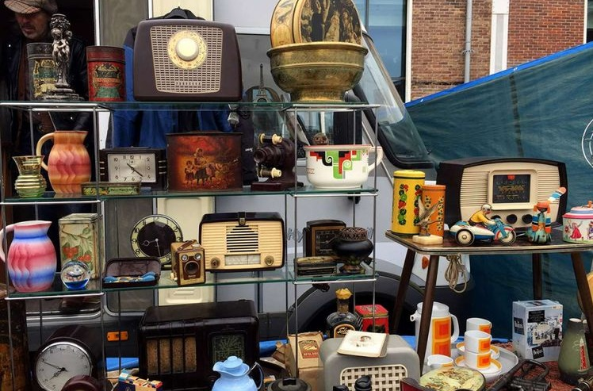
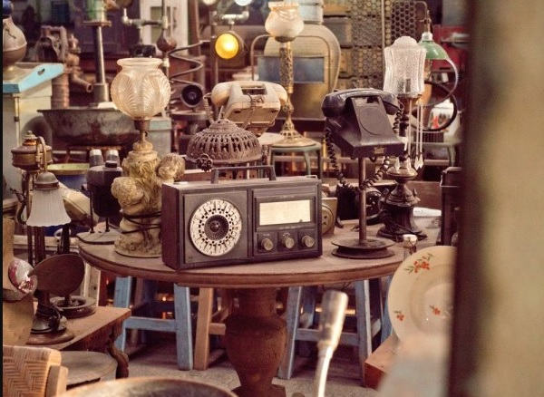

Tentang Kami
Selamat datang di website kami, tempat yang sempurna untuk menjual dan membeli barang bekas. Kami memahami bahwa barang-barang bekas masih memiliki nilai dan dapat memberikan manfaat bagi orang lain. Oleh karena itu, kami menyediakan platform ini sebagai tempat untuk menghubungkan penjual dan pembeli barang bekas.

Layanan Kami
Kami menawarkan berbagai layanan yang memudahkan Anda dalam proses jual-beli barang bekas. Anda dapat mencari barang yang Anda butuhkan atau menjual barang bekas yang tidak Anda gunakan lagi.

Keuntungan Membeli dan Menjual Barang Bekas
Jual-beli barang bekas memiliki banyak keuntungan. Pembeli dapat menemukan barang dengan harga yang lebih terjangkau, sementara penjual dapat membersihkan rumah mereka dan mendapatkan uang tambahan dari barang bekas yang tidak lagi mereka butuhkan. Selain itu, ini juga merupakan upaya yang ramah lingkungan karena mengurangi limbah dan memanfaatkan barang yang masih layak pakai.